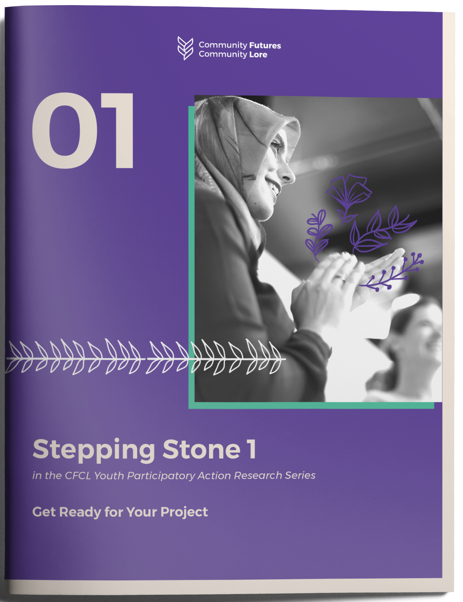

Get Ready for Our Project
So you are thinking about doing a Youth-led Participatory action Research (YPAR) project in your community or organization. Are you ready? In this first stepping stone, you will learn more about Community Futures Community Lore's approach to YPAR, assess your community and organization's readiness to do a project, plan and prepare for your project, and recruit your team.
Ready? Set? Go!

download
24 page PDF | 14 MB
01
